Chapter 4 Representing income inequality
This chapter turns attention to representing the extent of income inequality using data.
For ease of replication, all the data used in the documented is available as an Excel file data_ch3.xlsx with different datasets saved as different tabs. To replicate the rest of the document in your own R installation, download the file and place it inside a folder on your computer. Then set the working directory in R to the folder where you placed the file. On my computer this is done as follows:
In addition, run the following code to install all the R libraries that will be used for the analysis
install.packages("readxl")
install.packages("dplyr")
install.packages("ggplot2")
install.packages("forcats")
install.packages("pracma")
install.packages("scales")and load them
4.1 Distribution of income in the FRS 2016/17
The Family Resources Survey (FRS), carried out by the ONS, with the NatCen, and NISRA, is an annual survey collecting information on a representative sample of UK households (Office for National Statistics, Social and Vital Statistics Division, Department for Work and Pensions, National Centre for Social Research, 2023). It includes rich information on the incomes and characteristics of individuals and households.
This section uses an excerpt from the FRS 2016/17 individual level data to provide some examples of representing key cross-sectional patterns related to the unequal distribution of income, and to discuss how income inequality can be measured. The data is not open-access, hence it is not provided with this document. Given this you will not be able to replicate this section (without obtaining the data), but the structure of the data is explained in sufficient detail for you to understand the code.
4.1.1 Summary of data
Let’s start by loading the data and listing the first few rows
The data is a cross-section of 33252 observations on four variables from the 2016/17 financial year. An observation (row of the data) corresponds to an individual (aged 16 and over). The four variables are
- age - recording the age of the individual in bands
- educ - recording the highest education attainment of the individual in bands
- sex - recording the sex of the individual
- income - recording the individual’s total weekly income from all sources (including pensions and transfers) before tax.
To prepare the data for analysis
1. note that age, educ and sex are categorical (factor) variables which we can declare explicitly to avoid problems
# Declare variables as categorical
frs$age <- as.factor(frs$age)
frs$educ <- as.factor(frs$educ)
frs$sex <- as.factor(frs$sex)
# Change order of categories in `educ` in order of average income per group
frs$educ <- fct_reorder(frs$educ, frs$income, .fun=mean)- note that
incomeis recorded in the form of weekly income (i.e., measured in pounds per week). While equivalent, it is often more natural to think in terms of monthly or annual income. For this reason we will convert the income variable into approximate equivalent annual income by multiplying weekly income by 52 (the number of weeks in a year
Now income is measured in pounds per year, and corresponds to total income from all sources before tax. Hencefort, by “income” we will mean specifically this notion of income. It should be noted that inequality metrics discussed below are specific to this particular definition of income, and would be different for alternative income concepts (e.g., income after taxes, or labour income only).
To get a sense of the data, calculate some summary statistics for all variables in the dataframe
## age educ sex
## Age 16 to 24 :2456 GCSE or equivalent :11265 Female:17509
## Age 25 to 34 :4821 A-level or equivalent: 5139 Male :15743
## Age 35 to 44 :5334 Degree of equivalent : 7795
## Age 45 to 54 :5678 Postgraduate : 3162
## Age 55 to 64 :5734 NA's : 5891
## Age 65 and over:9229
## income
## Min. : 0
## 1st Qu.: 10088
## Median : 17576
## Mean : 22751
## 3rd Qu.: 28340
## Max. :885768For categorical variables summary() reports the number of individuals in different categories. For example, we can see that the sample consists of 17509 females and 15743 males; most individuals’ highest educational attainment is GSCE or equivalent (11265 individuals).
For numerical variables (in this case only income) summary() reports key summary statistics from the distribution. At this stage we can already see that income is very unequally distributed. Unsurprisingly, the minimum of the support of income is 0 (some individuals reported no income), while the richest individual in the data reported annual income of £885768. 25% of individuals in the data receive income below £10088, 50% receive income below £17576 (the median), 75% receive income below £28340. Mean income (at £22751) is above median (at £17576) indicating that the distribution is asymmetric.
4.1.2 Distribution of income: dispersion and skewness
To understand the distribution of income in the data, we start by plotting a histogram of income
ggplot(frs) +
geom_histogram(aes(x=income), bins = 100, fill="red") +
xlab("Annual income, GBP") + ylab("Number of observations") +
labs(title = "Histogram", subtitle = "Distribution of individual annual pre-tax income, FRS 2017")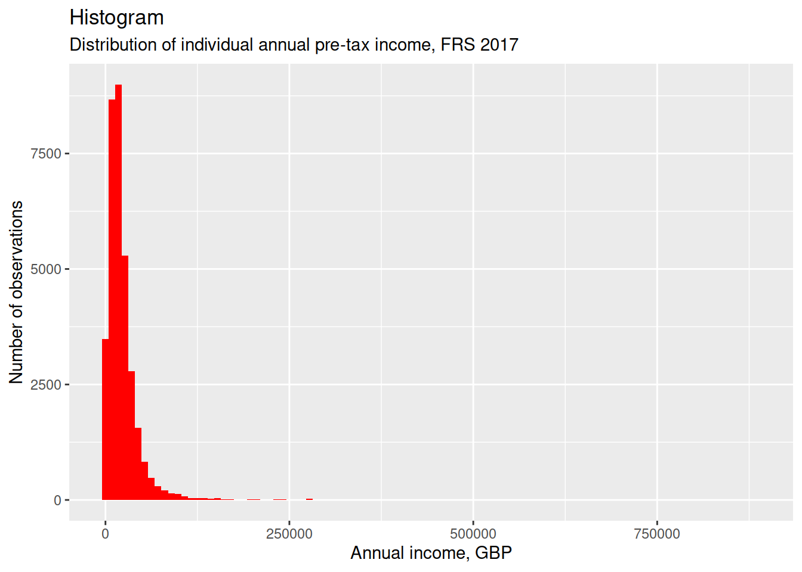
Note that by default the histogram is plotted over the whole support of income in the sample (i.e. from £0 to £885768). This makes the graph look somewhat peculiar - it looks as if there are no observations with income above £375000 but this is misleading as in fact there are (we know one observation has £885768) but the corresponding bars are so small that they are effectively invisible.
To focus on the part of the distribution where most of the mass lies, we can restrict the horizontal axis to the 99th quantile of the distribution only
ggplot(frs) +
geom_histogram(aes(x=income), bins = 100, fill="red") +
xlab("Annual income, GBP") + ylab("Number of observations") +
xlim(0,quantile(frs$income,0.99)) +
labs(title = "Histogram", subtitle = "Distribution of individual annual pre-tax income, FRS 2017, Bottom 99 percent")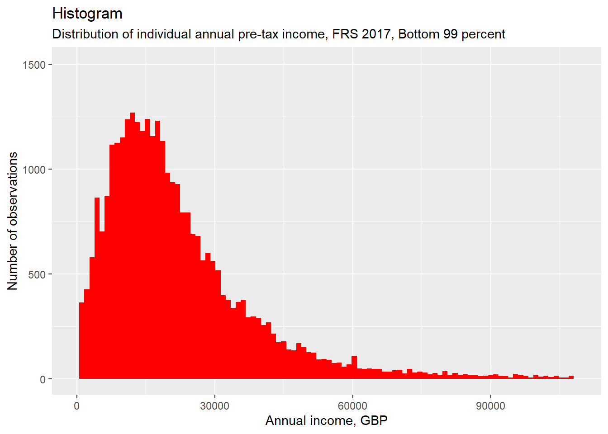
representing the income distribution within the bottom 99 percent of individuals by income only.
Two features of the distribution are immediately clear: 1. the distribution is highly disperse - there are large income differences between individuals. 2. the distribution is very strongly positively skewed - characterised by a long and thin right tail, with most observations found in the extreme left of the distribution.
It is clear that income is very unequally distributed. One implication of this is that when we use measures of central tendency (such as mean or median income) to quantify living standards within a country (for example, in measures such as GNI or GDP per capita) we should recognise the fact that they do not necessarily account for “typical” incomes - relatively few individuals earn income very close to the mean or the median.
Some important aspects of inequality are reflected in standard summary statistics. For example, as we observed above, mean income (£22751) considerably exceeds median income (£17576), which is a feature the observed asymmetry (skewness) of the distribution. Exactly 50% of individuals of the data receive income below £17576 (the median) but a much larger fraction of individuals receive income well below the mean.
To gain further quantitative understanding of the unequal distribution of income, it is informative to calculate some quantiles
## 10% 20% 30% 40% 50% 60% 70% 80% 90%
## 4264 8476 11544 14508 17576 20956 25324 31824 4336810% of individuals in the data receive less than £4264 pr year; 20% receive less than £8476 and so forth. One thing that we observe is that the fraction of people receiving less than average income is more than 60% (but less than 70%). Comparisons between different quantiles is very informative about both dispersion and assymetry (and as we will see later is the basis of some popular quantitative measures of income inequality). In particular, we observe large differences between quantiles (indicatig disperison) with differences increasing at higher incomes (indicating assymetry).
4.1.3 Income differences between and within groups of individuals
The above discussion referred to overall differences in income between individuals. Important aspects of inequality are about differences between (and within) groups. This section illustrates such differences on the basis of the categorical variables observed in the data: sex, age, educ.
4.1.3.1 Inequality between sexes
It is well known that there are systematic income differences between men and women. To explore these within this data, start by plotting separate histograms by sex:
ggplot(frs, aes(x=income, fill=sex, y = ..density..)) +
geom_histogram(bins = 50, position="dodge") +
scale_fill_manual(values=c("blue", "red")) +
xlab("Annual income, GBP") + ylab("Density") +
xlim(0,quantile(frs$income,0.99)) +
labs(title = "Histogram", subtitle = "Distribution of individual annual pre-tax income, FRS 2017, By sex")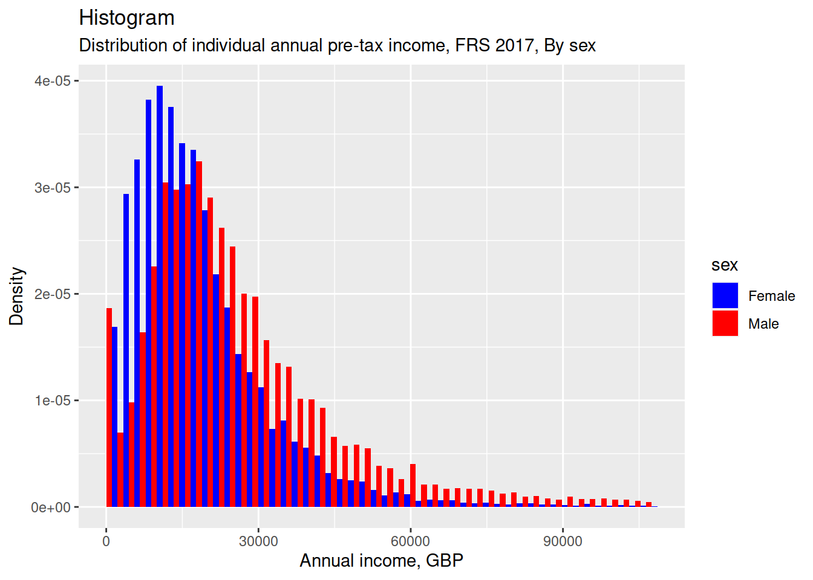
It can be seen that the income distributions for men and women are different and, in particular, it appears that the distribution for men is shifted to the right relative to the distribution for women (for example, relative to men, women are more likely to be in the left tail of the overall distribution, and less likely in the right tail).
To get a more quantitative (if less rich) description of the differences, we can obtain a set of summary statistics (mean, median, 10th percentile, 90th percentile) for income by sex:
frs %>% group_by(sex) %>% summarise(mean=mean(income), median = median(income), q10 = quantile(income, 0.1), q90 = quantile(income, 0.9))Average income for men in the sample (£27992) far exceeds average income for women (£18037) and similarly for medians, 10th percentile and 90th percentile. For example, 90 percent of women receive less than £35266 while 90% of mean receive less than £52416.
As discussed before, a convenient way of presenting key summary statistics (25th percentile, median, 75th percentile, interquartile range) is through a box plot:
ggplot(frs,aes(y=income, fill=sex))+
geom_boxplot(alpha=0.5, outlier.shape = NA) + ylim(0,quantile(frs$income,0.95)) +
scale_fill_manual(values=c("blue", "red")) +
xlab("") + ylab("Annual income, GBP") +
labs(title = "Box plot", subtitle = "Annual income by sex, FRS 2017", fill="") +
theme(axis.text.y = element_blank())+ coord_flip() 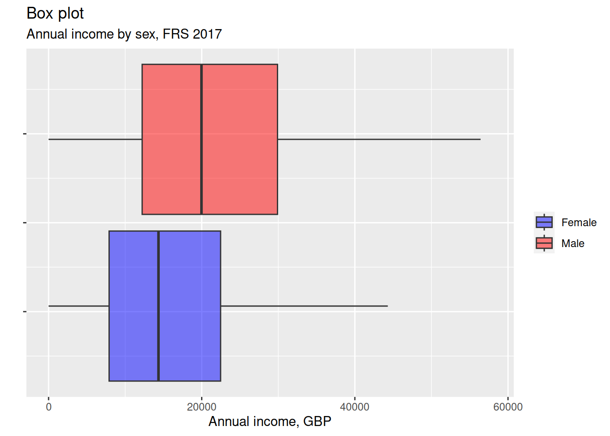
Indeed we observe systematic differences in the distribution on income between men and women. It should be noted, however, that this accounts for only small part of the overall income inequality as the distributions of incomes within groups are still very unequal.
4.1.3.2 Income differences between age groups
It is similarly well known income varies systematically over the life cycle, and some of the observed overall differences in incomes reflects differences in individuals’ age.
Given that we have 6 age groups, histograms will tend to be somewhat uninformative, but as before we can obtain a set of summary statistics for income by age
frs %>% group_by(age) %>% summarise(mean=mean(income), median = median(income), q10 = quantile(income, 0.1), q90 = quantile(income, 0.9))or use a box plot
ggplot(frs,aes(y=income, fill=age))+
geom_boxplot(outlier.shape = NA) + ylim(0,quantile(frs$income,0.95)) +
xlab("") + ylab("Annual income, GBP") +
labs(title = "Box plot", subtitle = "Income distribution by age, FRS 2017", fill="") +
scale_fill_brewer(palette = "Reds") +
theme(axis.text.x = element_blank())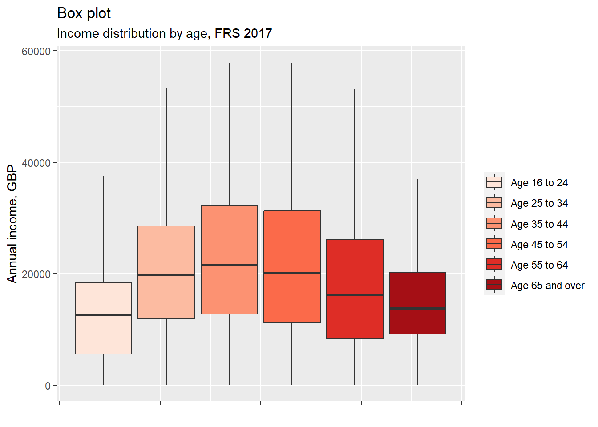
The age profile of income over age probably reflects life-cyclical patterns of labour income, where income increases on average as people progress through their careers, and then declines as they enter retirement. This clarifies that there are systematic income differences by age. It should be noted, however, that this accounts for only small part of the overall income inequality as distributions of incomes within age groups are still very unequal.
4.1.3.3 Income differences by education
Repeating the analysis for individuals with different education in terms of summary statistics
frs %>% group_by(educ) %>% summarise(mean=mean(income), median = median(income), q10 = quantile(income, 0.1), q90 = quantile(income, 0.9))and box plot
ggplot(frs,aes(y=income, fill=educ))+
geom_boxplot(outlier.shape = NA) + ylim(0,quantile(frs$income,0.95)) +
xlab("") + ylab("Annual income, GBP") +
labs(title = "Box plot", subtitle = "Distribution of income by age, FRS 2017", fill="") +
scale_fill_brewer(palette = "Reds") +
theme(axis.text.y = element_blank())+ coord_flip() 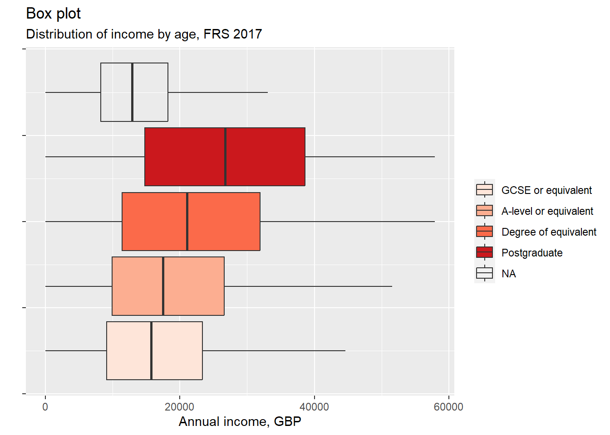
we observe that more education associates strongly with higher income, likely reflecting returns to education. For example, the median income among those with postgraduate degree (£31096) is just slightly below the 80th percentile of the overall income distribution (£31824), while the median for those with GCSE or equivalent (£16068) is just slightly above the 40th percentile of the overall income distribution (£14508). Again, while we observe systematic income differences between education groups, there is also significant income inequality within groups.
4.1.4 Quantitative measures of income inequality
While histograms allow us to represent the distribution of income in all its complexity, we are often interested in comparing the extent of inequality in different income distributions. For example: - we might be interested in comparing different countries by income inequality. This amounts to comparing the whole distribution of income in Country A to the distribution of income in Country B. - we might be interested in analyzing how income inequality changes over time in a given country. This amounts to comparing the distribution of income in Year A to the distribution of income in Year B.
As comparisons between histograms could be difficult (as observed) it would be more appropriate to use numerical measures of inequality instead. A numerical measure of inequality, is one that summarizes some aspect of the inequality into a single number. As inequality is a complex phenomenon, there are many different numerical measures, which emphasise different aspects of inequality. While a thorough discussion of different metrics is beyond the scope of the document, this section briefly outlines several popular metrics and illustrates their meaning through the data.
4.1.4.1 Percentile ratios
We have already seen that comparison between different percentiles of the distribution is informative about important aspects of inequality. Percentile ratios (or p-ratios) are simply ratios of percentiles. Two common percentile ratios used to quantify inequality of income are the P50P10 ratio (the ratio between median income and the 10th percentile of income) and the P90P50 ratio (the ratio between the 90th percentile of income and median income).
For example, for the whole data, we can calculate the 10th, 50th and 90th percentiles, and the corresponding percentile ratios as follows
frs %>% summarise(q10 = quantile(income, 0.1), q50 = median(income), q90 = quantile(income, 0.9), p90p50 = q90/q50, p50p10 = q50/q10)We observe that those at the 90th percentile of the distribution have 2.47 times higher income than those at the median; while the latter have 4.12 times more income than those at the 10th percentile.
To show how p-ratios can be used to compare inequality across distributions, we can calculate the p-ratios for the income distributions within education groups in the data:
frs %>% group_by(educ) %>% summarise(q10 = quantile(income, 0.1), q50 = median(income), q90 = quantile(income, 0.9), p90p50 = q90/q50, p50p10 = q50/q10)We have already seen that overall average and median incomes increase with education. However, we can now see that the distributions within groups become increasingly unequal with higher education.
4.1.4.2 Measures of concentration
So far we have discussed two important features of the distribution of income - dispersion and asymmetry. Another important feature, which is somewhat distinct from the former, is that income distributions tend to be highly concentrated. Loosely, this means that relatively small fractions of the overall population receive relatively large shares of the total income. Some of the most popular metrics of income inequality (shares of top 10% or top 1%, GINI coefficient, etc) are in fact measures of concentration.
4.1.4.2.1 Lorenz curve
To understand measures of concentration, suppose that we order all individuals in the data by increasing order of their income
Calculate the quantile rank of each individual (i.e., the percentile of the overall distribution corresponding to the particular individual’s income)
Now suppose that we move from the poorest to the richest individual, and for each we record the total income received by herself and those poorer, in a new variable, cuminc (for cummulative income)
Next, divide cuminc by the total amount of income earned by individuals in the data
to obtain the cummulative income share at each quantile rank.
The mapping from quantile rank to cummulative income share is known as a the Lorenz curve. The Lorenz curve for income in the FRS data can be represented graphically as follows
ggplot(frs) +
geom_line(aes(x=inc.qrank, y=cumincshare), col="tomato") +
scale_x_continuous(breaks = seq(0,1, by=0.1)) +
scale_y_continuous(breaks = seq(0,1, by=0.1)) +
xlab("Quantile of income") +
ylab("Cummulative share of income") +
labs(title = "Lorenz curve")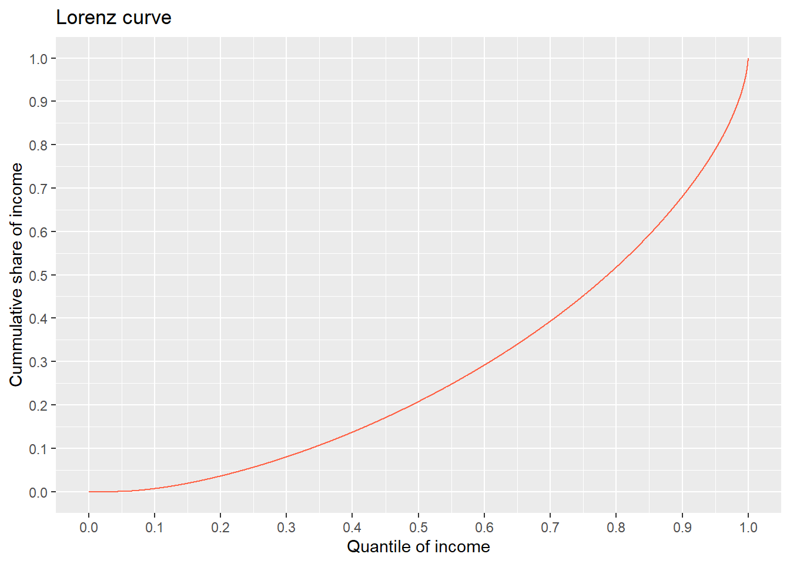
From the Lorenz curve, we can observe that, for example - the bottom 50 % of individuals by income receive around 20% of all the income in the sample. Therefore, the top 50% receive around 80%. - the bottom 90% of individuals receive around 68% of all the income. Therefore, the top 10 % receive the remaining 32%. - the top 5% receive around 21% of all income - and so forth.
4.1.4.2.3 Gini coefficient
Probably the best known measure of income inequality, the Gini coefficient, is in fact a measure of concentration related to the Lorenz curve. The figure below plots the actual empirical Lorenz curve for the FRS (in blue) together with - a counterfactual Lorenz curve for an economy with “perfect equality” (in red). If all individuals in an economy receive the same income (perfect equality), and are ordered arbitrarily along the horizontal axis, then the “poorest” (arbitrarily defined) \(n\)% of the population, would be receiving \(n\)% of the total income. The Lorenz curve maps \(n\) to \(n\) and is therefore a straight line with slope 45 degrees. - a counterfactual Lorenz curve for an economy with “perfect inequality” (in green). If all but one individuals in the economy receive no income, and one receives some (and therefore all the income), then the income share of the “all but one” will be 0 (implying horizontal portion of the Lorenz curve over \([0,1)\)) and a discontinuous jump at \(1\).
ggplot(frs) +
geom_line(aes(x=inc.qrank, y=cumincshare, col="Lorenz curve, FRS"), size=1) +
geom_segment(x=0, xend=1, y=0, yend=1,
aes(col="Lorenz curve under perfect equality"), size=1) +
geom_segment(x=0, xend=1, y=0, yend=0,
aes(col="Lorenz curve under perfect inequality"), size=1) +
geom_segment(x=1, xend=1, y=0, yend=1,
aes(col="Lorenz curve under perfect inequality"), size=1) +
xlab("Quantile of income") +
ylab("Cummulative share of income") +
labs(title = "Lorenz curves and Gini coefficient, 1", color = "") 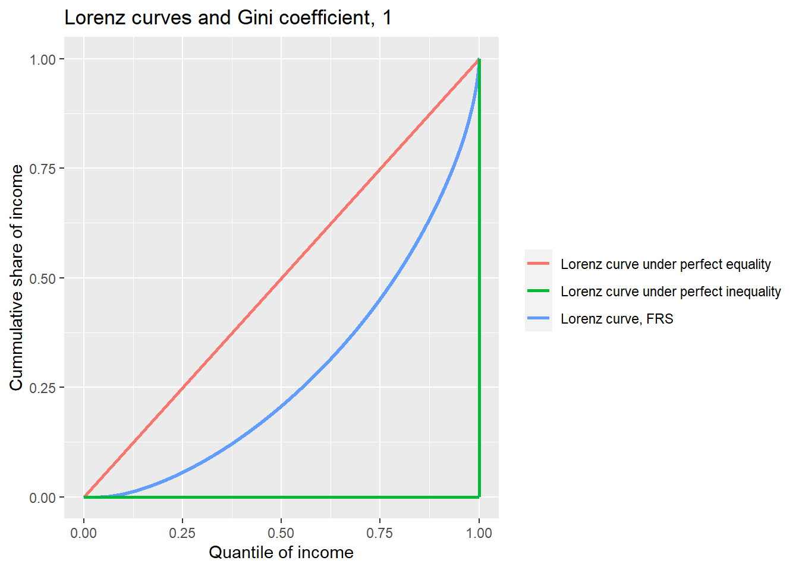
Intuitively, the closer is the actual Lorenz curve to the perfect equality one, the more equal is the distribution; the closer to the perfect inequality one, the more unequal is the distribution. The Gini coefficient measures exactly how close the actual Lorenz curve is to the perfect inequality line and more specifically is defined as follows:
Let \(A\) denote the area between the actual Lorenz curve and the perfect equality line, and \(B\) denote the area between the perfect inequality line and the actual Lorenz curve:
ggplot(frs) +
geom_line(aes(x=inc.qrank, y=cumincshare, col="Lorenz curve, FRS"), size=1) +
geom_segment(x=0, xend=1, y=0, yend=1, aes(col="Lorenz curve under perfect equality"), size=1) +
geom_segment(x=0, xend=1, y=0, yend=0, aes(col="Lorenz curve under perfect inequality"), size=1) +
geom_segment(x=1, xend=1, y=0, yend=1, aes(col="Lorenz curve under perfect inequality"), size=1) + xlab("Quantile of income") +
geom_ribbon(aes(x=inc.qrank, ymin = cumincshare, ymax = inc.qrank, fill = "A"), alpha=0.5) +
geom_ribbon(aes(x=inc.qrank, ymin = 0, ymax = cumincshare, fill = "B"), alpha = 0.5) +
ylab("Cummulative share of income") +
labs(title = "Lorenz curves and Gini coefficient, 2", color = "", fill = "Area")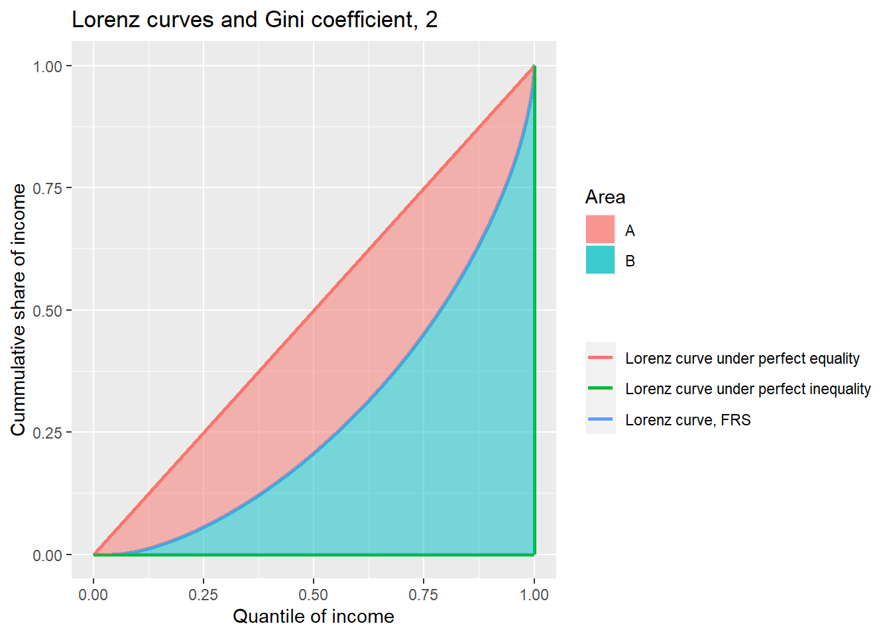
Then the Gini coefficient is defined as
\[Gini = \frac{A}{A+B}\]
Note that since \(A+B=1/2\), the Gini coefficient is also equal to \(2A\) or \(1-2B\). It is easy to see that the value of the Gini coefficient is a number between 0 and 1, with 0 indicating perfect equality, and 1 indicating perfect inequality.
One way to calculate the Gini coefficient in our data is to obtain the area \(B\) as the definite integral of the Lorenz curve from 0 to 1. Integrating the Lorenz curve numerically yields
## [1] 0.4410313so the Gini coefficient in the FRS data is 0.44. This seems in line with estimates from administrative data for income from all sources before taxes. Unlike other numerical measures, the scale of the Gini coefficient is difficult to interpret in itself. However, as all numerical measures it is useful for comparing the inequality of different distributions, e.g., between countries, or within a country over time, as we see below.
4.2 Cross-country differences in income inequality
The World Inequality Database provides open access to the most extensive available database on the historical evolution of the world distribution of income and wealth, both within countries and between countries.
This section uses cross sectional data of countries on a set of measures of income inequality in 2017. The data comes from Alvaredo and Saez (2022), and is available here. For ease of replication, the data has been saved in the sheet WID17 of the data_ch3.xlsx Excel file.
Load the data and print first few rows
wid2017 <- read_xlsx("data_ch3.xlsx", sheet = "WID2017")
wid2017$Country <- as.factor(wid2017$Country)
head(wid2017)The dataset contains observations for 48 countries in 2017, on 6 aggregate measures of inequality in pre-tax income.
- gini is the Gini coefficient
- s10, s1, and s0.1 are the income shares of the top 10%, 1%, and 0.1%
- p90p50 and p50p10 are the P90P50 and P50P10 percentile ratios.
To get a sense of the data, report a set of summary statistics
## Country Year gini s10 s1
## Argentina: 1 Min. :2017 Min. :0.3779 Min. :27.47 Min. : 7.05
## Australia: 1 1st Qu.:2017 1st Qu.:0.4394 1st Qu.:33.18 1st Qu.:10.50
## Belarus : 1 Median :2017 Median :0.5072 Median :37.73 Median :12.86
## Belgium : 1 Mean :2017 Mean :0.5192 Mean :40.84 Mean :14.35
## Brazil : 1 3rd Qu.:2017 3rd Qu.:0.5809 3rd Qu.:46.89 3rd Qu.:17.65
## Bulgaria : 1 Max. :2017 Max. :0.7442 Max. :64.19 Max. :27.06
## (Other) :42
## s0.1 p90p50 p50p10
## Min. : 1.640 Min. :1.676 Min. :4.578
## 1st Qu.: 3.397 1st Qu.:2.237 1st Qu.:5.080
## Median : 4.660 Median :2.656 Median :5.403
## Mean : 4.915 Mean :2.926 Mean :5.589
## 3rd Qu.: 5.575 3rd Qu.:3.452 3rd Qu.:5.903
## Max. :12.670 Max. :6.179 Max. :8.298
## NA's :8It is immediately observed, that there are large differences in the values of all income-inequality metrics across countries. For example, the income share of the top 0.1 % of individuals varies from 1.6% to 12.67% across countries.
Given the relatively small number of observations, a convenient way to represent cross country differences is through ordered bar charts. Arranging countries in increasing order of Gini coefficients, and representing the value of each country’s Gini coefficient by the height of the corresponding bar yields
ggplot(wid2017) +
geom_bar(aes(x=fct_reorder(Country, gini), y=gini), stat="identity", fill="red", col="black") +
theme(axis.text.y= element_text(size=6)) +
xlab("") + ylab("Gini coefficient") +
labs(title = "Gini coefficients across countries",
subtitle = "Pre-tax income from all sources") +
coord_flip()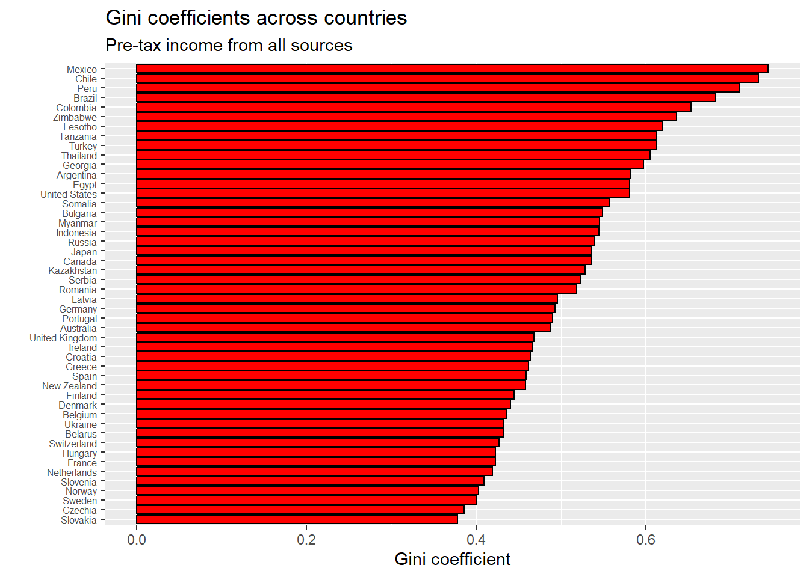
We observe large cross-country differences in terms of Gini coefficients. Within the sample, in terms of Gini coefficients, Slovakia has the most equal income distribution (0.378) and Mexico has the most unequal income distribution (0.744).
Producing similar graphs for the other metrics
ggplot(wid2017) +
geom_bar(aes(x=fct_reorder(Country, s10), y=s10), stat="identity", fill="red", col="black") +
theme(axis.text.y= element_text(size=6)) +
xlab("") + ylab("Top 10 % income share") +
labs(title = "Top 10% income shares across countries",
subtitle = "Pre-tax income from all sources") +
coord_flip()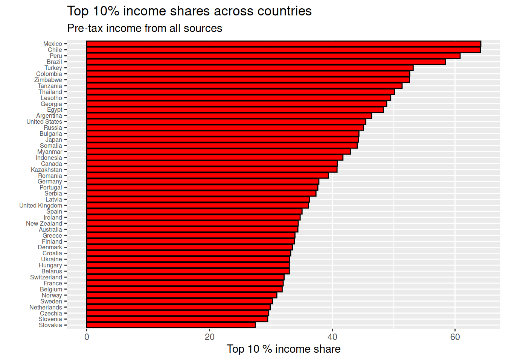
ggplot(wid2017) +
geom_bar(aes(x=fct_reorder(Country, s1), y=s1), stat="identity", fill="red", col="black") +
theme(axis.text.y= element_text(size=6)) +
xlab("") + ylab("Top 1% income share") +
labs(title = "Top 1% income shares across countries",
subtitle = "Pre-tax income from all sources") +
coord_flip()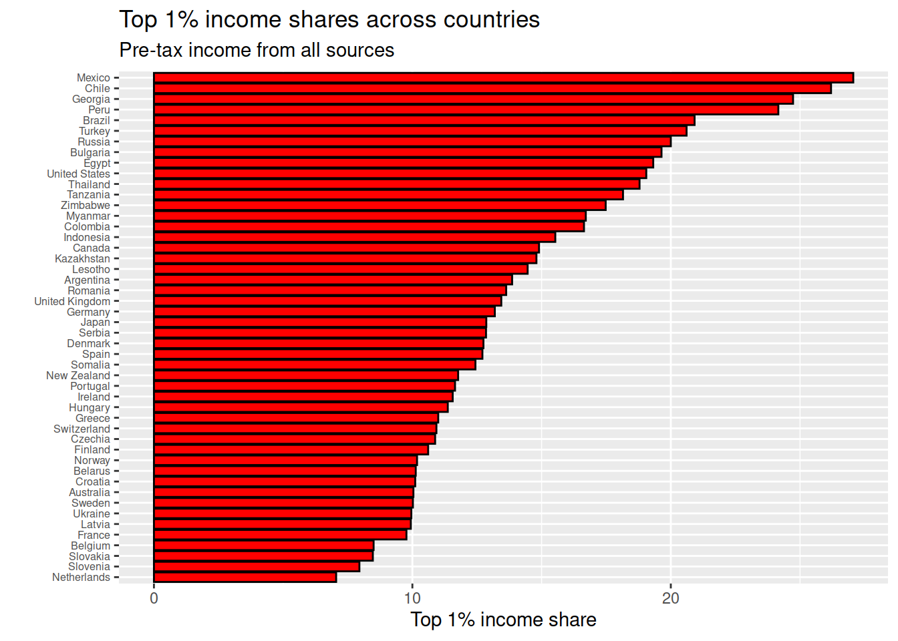
ggplot(wid2017) +
geom_bar(aes(x=fct_reorder(Country, p90p50), y=p90p50), stat="identity", fill="red", col="black") +
theme(axis.text.y= element_text(size=6)) +
xlab("") + ylab("P90P50 ratio") +
labs(title = "P90P50 ratio across countries",
subtitle = "Pre-tax income from all sources") +
coord_flip()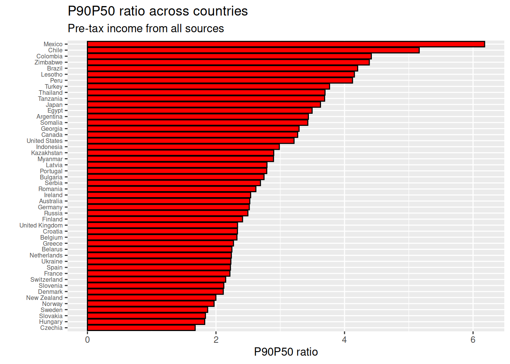
ggplot(subset(wid2017, !is.na(p50p10))) +
geom_bar(aes(x=fct_reorder(Country, p50p10), y=p50p10), stat="identity", fill="red", col="black") +
theme(axis.text.y= element_text(size=6)) +
xlab("") + ylab("P50P10 ratio") +
labs(title = "P50P10 ratio across countries",
subtitle = "Pre-tax income from all sources") +
coord_flip()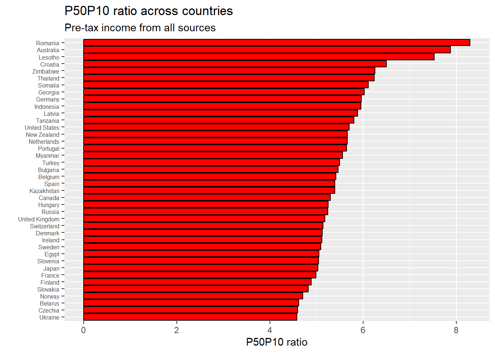
we observe that there are significant differences in terms of all different measures. Of course, different measures capture different aspects of inequality (e.g., Gini coefficients and top income shares in particular are measures of concentration, while the percentile ratios measure specific aspects of dispersion).
Nonetheless, inspecting the graphs, it seems countries with high inequality in one measure, tend to also exhibit high inequality in terms of the other measures. To inspect this relationship more clearly we next present scatterplots showing the association netween Gini coefficients and other metrics.
In terms of Gini coefficient and top income shares
ggplot(wid2017, aes(x=gini)) +
geom_point(aes(y=s10, col="Top 10%")) +
geom_point(aes(y=s1, col="Top 1%")) +
geom_point(aes(y=s0.1, col="Top 0.1%")) +
xlab("Gini coefficient") +
ylab("Measure") +
labs(title = "Scatterplot", subtitle = "Association between Gini coefficient and top income shares, countries", col = "Income share")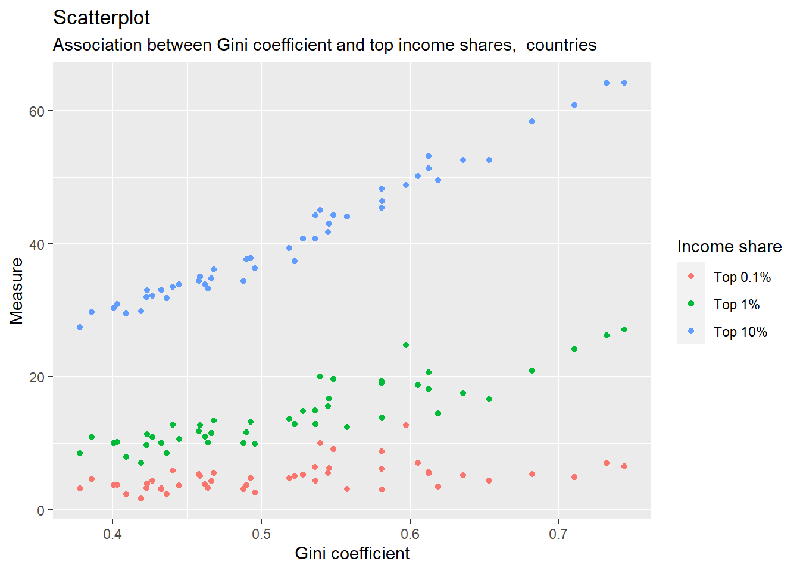
unsurprisingly, we observe very strong positive association - countries with high Gini coefficients tend to also have high top income shares. Of course, this is not surprising as both Gini coefficients and top income shares are fundamentally measures of concentration, capturing similar aspects of income distributions within countries.
Perhaps more surprisingly, we observe also very strong association between Gini coefficients and percentile ratios:
ggplot(wid2017, aes(x=gini)) +
geom_point(aes(y=p50p10, col="P50P10")) +
geom_point(aes(y=p90p50, col="P90P50")) +
xlab("Gini coefficient") +
ylab("Measure") +
labs(title = "Scatterplot", subtitle = "Association between Gini coefficient and percentile ratios, countries", col = "Measure")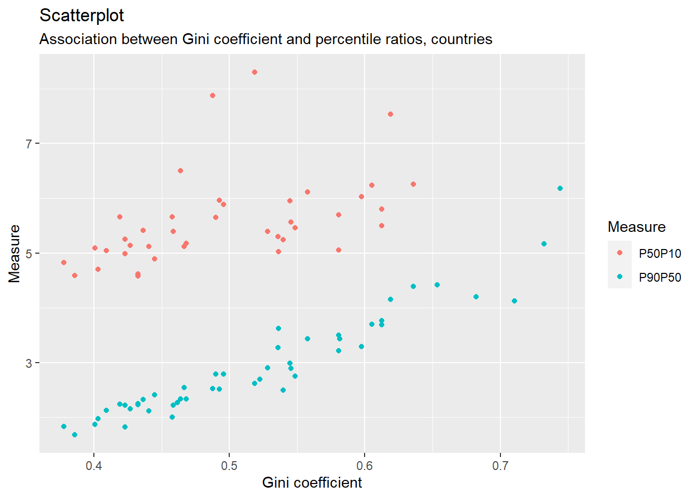
In general, the data shows that there are large and systematic differences in income inequality across countries.
4.3 Income inequality over time
This section uses a panel dataset for several large developped economies, tracking measures of income inequality from the begining of the 20th century, until 2022. As in the previous section, the data comes from Alvaredo and Saez (2022) and is available here The . For ease of replication, the data has been saved in the sheet WIDpanel of the data_ch3.xlsx Excel file.
Load the data and print first few rows
panel <- read_xlsx("data_ch3.xlsx", sheet = "WIDpanel")
panel$Country <- as.factor(panel$Country)
head(panel)We have a panel data in long form, with records of the Gini coefficient and Top 10%, Top 1% and Top 0.1 % income shares, for each country in each year, from 1912 until 2021.
The set of countries included
## [1] "Australia" "Canada" "France" "Germany"
## [5] "Japan" "United Kingdom" "United States"are large developed economies.
Plotting time series plots of Gini coefficient across time, for each country yields
ggplot(panel, aes(x=Year, y=gini, col=Country)) +
geom_line() +
geom_point() +
scale_color_brewer(palette = "Dark2") +
xlab("") + ylab("Gini coefficient") +
labs(title = "Time series line plot", subtitle = "Gini coefficient over time")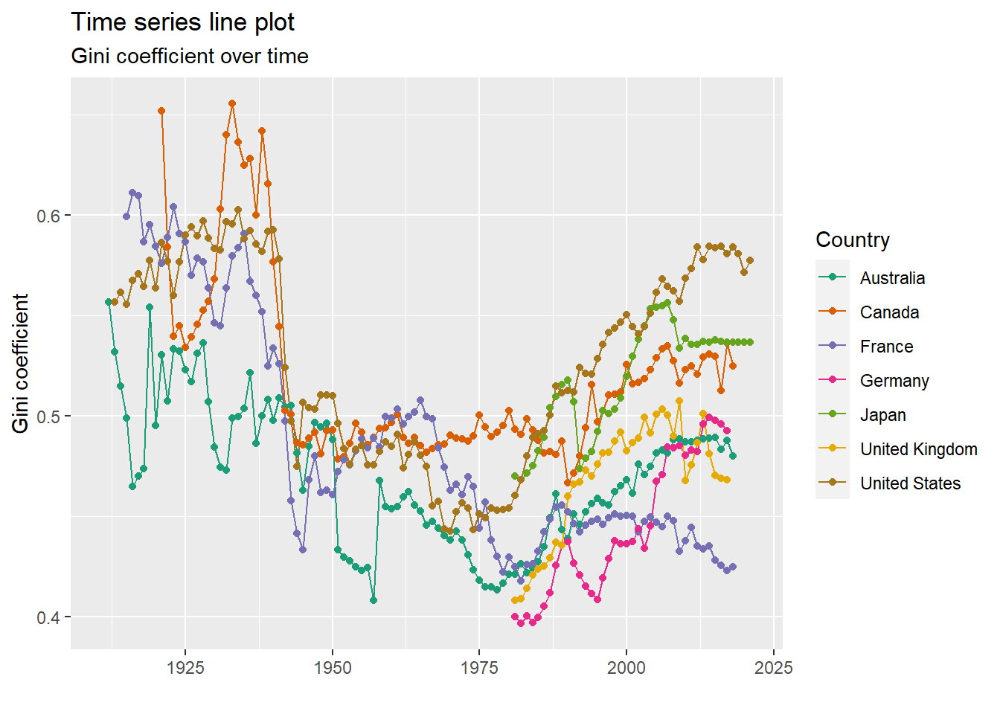
We can see that data on Gini coefficient for Australia, Canada, France and US are available since 1912, but for the rest data only becomes available late in the second half of the 20th century.
While there are some differences across countries, the overall pattern can be summarized as follows: - income inequality (measured by Gini coefficient) was relatively high in the beginning of the 20th century and remained elevated until the 1930s-1940s, when it decreased substantially. - inequality remained relatively low for the next several decades, starting to pick up again at various points in the 1970s. - since then inequality has been overall increasing.
This pattern is well known and documented. While various explanations for it have been proposed, a discussion is beyond the scope of this document.
However, something that we can check in our data is whether the evolution of inequality in terms of Gini coefficients is similar to the evolution in terms of other measures. Unsurprisingly, it turns out that top income shares have followed a similar pattern:
ggplot(panel, aes(x=Year, y=s10, col=Country)) +
geom_line() +
geom_point() +
scale_color_brewer(palette = "Dark2") +
xlab("") + ylab("Top 10% income share") +
labs(title = "Time series line plot", subtitle = "Top 10% income share over time")
ggplot(panel, aes(x=Year, y=s1, col=Country)) +
geom_line() +
geom_point() +
scale_color_brewer(palette = "Dark2") +
xlab("") + ylab("Top 1% income share") +
labs(title = "Time series line plot", subtitle = "Top 1% income share over time")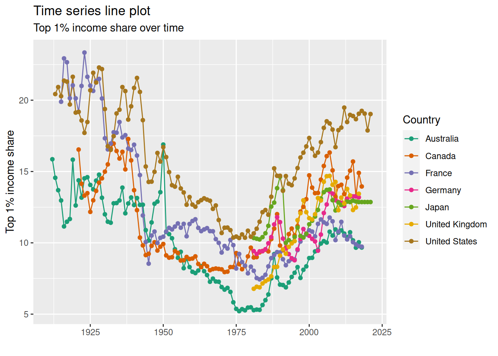
In summary, we observe a common pattern across a set of large developped economies, where income inequality has followed a U-shaped pattern over time for the last 100 years or so. At present, measures of inequality are elevated relative to the norm of the middle of the 20th century.